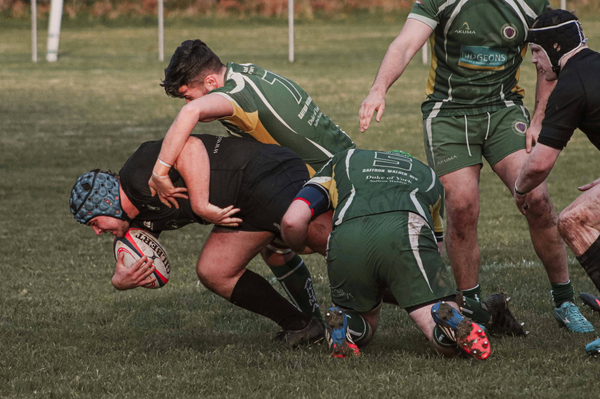
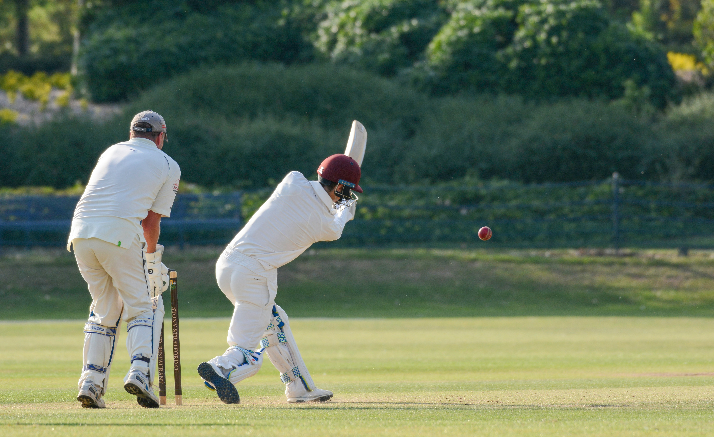

A New Generation Rising in South African Football
Discover the emerging talent looking to make their mark in South African football.
The Human Within the Extraordinary

FEATURE
The Human Cost of Sporting Greatness
Behind every performance is an athlete dealing with expectations, sacrifice and pressure. The Medalist explores the people behind the results and the stories that statistics cannot tell.
Read Feature
Discover the emerging talent looking to make their mark in South African football.

A closer look at the next generation of rugby players.

Young players are beginning to establish themselves on the cricketing stage.

Exploring the growth and potential of basketball in South Africa.
Expert Analysis
Analysis from people who have lived it.
FOOTBALL
Senior Football Analyst
A former elite left winger and 15-time major trophy winner, Lorenzo brings first-hand experience of elite football to his tactical analysis and player performance insights.
Read Football Analysis →RUGBY
Senior Rugby Analyst
A former international-level forward and 13-time major trophy winner, Andreas provides insight into rugby tactics, set-piece strategy and player performance.
Read Rugby Analysis →The Medalist Perspective
Beyond the statistics. Beyond the trophies. Beyond the headlines.
Every athlete has a story that exists beyond the scoreboard. Our documentaries and long-form features explore the people behind sport's biggest moments, giving audiences an opportunity to understand the pressure, sacrifice, ambition and humanity behind elite performance.
Explore Our Stories →A behind-the-scenes look at the people who make professional sport possible.
Explore FeaturesMeet the young South African athletes and sporting organisations shaping the future.